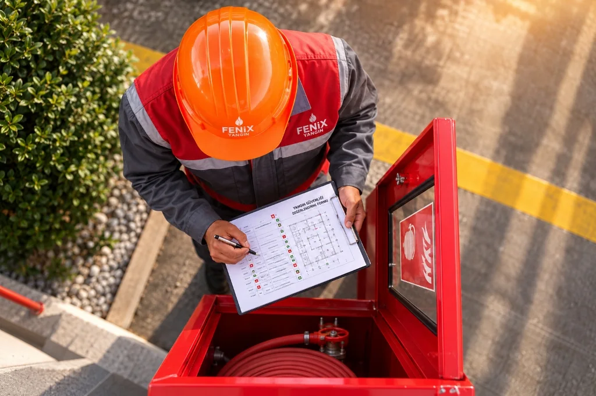

Yangın Sınıfları Nelerdir? TS EN 2 Standartları ve Söndürme Sistemleri Rehberi
Yangın sınıfları, yanan maddenin fiziksel fazı ve kimyasal yanma dinamiğine bağlı olarak Türk Standartları Enstitüsü tarafından uyumlaştırılan TS EN 2 standardı ve Türkiye Binaların Yangından Korunması Hakkında Yönetmelik (BYKHY) kapsamında 5 temel sınıfa (A, B, C, D, F) ayrılır.
Elektrik yangınları TS EN 2'de bir yakıt sınıfı değil, tutuşma kaynağı ve elektrik tehlikesi (electrical hazard) olarak ele alınır. Yanlış yangın söndürme ajanı kullanımı (örneğin kızgın yağ veya hafif metal yangınlarına su sıkılması) patlamalara ve alevin hızla yayılmasına yol açar. Bu nedenle her tehlike sınıfına uygun söndürme maddesi seçimi yasal ve mühendislik bir zorunluluktur.

1. TS EN 2 Yangın Sınıfları ve Söndürücü Seçim Matrisi
Türkiye'de yürürlükte olan TS EN 2:2004 standardı ve Binaların Yangından Korunması Hakkında Yönetmelik hükümlerine göre temel yangın sınıfları, yakıt cinsleri, uygun söndürücü ajanlar ve kaçınılması gereken müdahaleler aşağıda özetlenmiştir:
| Sınıf | Yanıcı Madde Türü | Örnek Yakıtlar | Onaylı Söndürücü Ajan / Sistem | Kesinlikle Kullanılmaması Gerekenler |
|---|---|---|---|---|
| A | Katı Maddeler (Organik, kor bırakan) |
Ahşap, kağıt, tekstil, kömür, karton, saman | Su sisi, köpük, ABC kuru kimyevi toz, temiz gazlar | Sadece boğma etkisi yapan yetersiz gaz konsantrasyonu (derin kor riski) |
| B | Sıvı Maddeler (Sıvı ve eriyebilir katılar) |
Benzin, motorin, solvent, tiner, alkol, vernik, parafin | FM-200, Novec 1230, CO2, mekanik köpük, BC/ABC toz | Doğrudan tazyikli su jeti (sıvıyı sıçratarak alevi çevreye yayar) |
| C | Gaz Maddeler (Basınçlı/sıvılaştırılmış) |
Doğalgaz (metan), LPG (propan/bütan), hidrojen, asetilen | Öncelikle gaz vanasını kesmek; kuru toz, temiz gazlar | Gaz akışı kesilmeden alevin söndürülmesi (patlama ve gaz birikimi riski) |
| D | Yanıcı Metaller (Hafif metaller ve talaşlar) |
Magnezyum, alüminyum tozu, lityum, sodyum, potasyum | Özel D tipi mineral kuru tozlar (fluxing tozu), kuru dökme kum | Su, köpük, CO2, halokarbonlar (hidrojen açığa çıkararak termal patlama yapar) |
| ELEKTRİK | Elektrik Tehlikesi (Enerjili donanımlar) |
Trafo, jeneratör, pano, UPS, server kabineti, kablo tavaları | Pano içi mikro söndürme, FM200, Novec 1230, CO2 | İletken su jeti ve köpük (elektrik çarpması ve kalıcı donanım hasarı) |
| F | Pişirme Yağları (Bitkisel/hayvansal yağlar) |
Endüstriyel fritöz yağları, katı/sıvı yemek yağları, gres | UL 300 onaylı ıslak kimyasal davlumbaz sistemleri | Su dökmek (anında buhar genleşmesi ve alev topu patlaması) |
2. TS EN 2 (Avrupa) ile NFPA 10 (ABD) Sınıflandırma Farkları
Uluslararası projelerde ve teknik şartnamelerde en sık karşılaşılan hatalardan biri, Avrupa normu (TS EN 2) ile Amerikan normu (NFPA 10) arasındaki sınıflandırma ve harflendirme farklarının karıştırılmasıdır:
| Yangın Tehlikesi / Yakıt | Avrupa & Türkiye (TS EN 2) | Amerika Birleşik Devletleri (NFPA 10) | Teknik Ayrım Nedeni |
|---|---|---|---|
| Katı maddeler (ahşap, kağıt) | Sınıf A | Class A | Her iki standartta da ortaktır. |
| Yanıcı sıvılar (benzin, solvent) | Sınıf B | Class B | Her iki standartta da ortaktır. |
| Yanıcı gazlar (LPG, doğalgaz) | Sınıf C | Class B | NFPA yanıcı gazları sıvı yakıtlarla birlikte Class B altında değerlendirir. |
| Yanıcı metaller (magnezyum, lityum) | Sınıf D | Class D | Her iki standartta da özel metal tozları şarttır. |
| Enerjili elektrik donanımı | Elektrik Tehlikesi (Ayrı harf sınıfı yoktur) | Class C | TS EN 2 elektriği yakıt değil tutuşma kaynağı sayar; NFPA harf sınıfı verir. |
| Pişirme yağları (fritöz, davlumbaz) | Sınıf F | Class K (Kitchen) | EN 2'ye 2004 yılında F olarak eklenmiş, NFPA'de Kitchen (K) olarak adlandırılmıştır. |
3. Yangın Sınıflarının Ayrıntılı Analizi ve Mühendislik Yaklaşımı
A Sınıfı Yangınlar: Katı Madde ve Derin Kor Yangınları
A sınıfı yangınlar; ahşap, kömür, selüloz, kağıt, kauçuk ve tekstil gibi organik kökenli, karbonlu katı yanıcıların oluşturduğu yangınlardır. Bu yangınların en temel özelliği, alevli yanmanın yanı sıra iç kısımlarda akkor (kor) oluşumu ile için için yanmaya devam etmesidir.
- Söndürme Mekanizması: Temel mekanizma soğutmadır. Yanan maddenin tutuşma sıcaklığının altına düşürülmesi gerekir.
- Söndürücü Seçimi: Su sisi, mekanik köpük ve ABC kuru kimyevi tozlar etkilidir. Su sisi, yüksek ısı soğurma kapasitesiyle kor halindeki katı yakıtı hızla söndürür.
- Sabit Sistemler: Arşiv, kütüphane veya müze gibi katı yakıt içeren ancak suyun kalıcı hasar vereceği alanlarda Novec 1230 ve FM-200 temiz gazlı sistemleri A sınıfı tasarım konsantrasyonunda (TS EN 15004-1) projelendirilir.
B Sınıfı Yangınlar: Yanıcı Sıvı Yangınları ve Polar Solvent Riski
B sınıfı yangınlar; benzin, tiner, boya, mazot, solvent, alkol ve eriyebilir katıların (parafin, plastik reçineler) yangınlarıdır. Sıvıların kendisi değil, yüzeyden buharlaşan gaz fazı yanar.
- Söndürme Mekanizması: Oksijenin sıvı yüzeyiyle temasını kesmek (boğma) ve kimyasal zincir reaksiyonu kırmaktır.
- Polar Solvent Ayrımı: Hidrokarbon bazlı (apolar) sıvılarda standart AFFF köpükleri çalışırken; alkol, aseton ve ester gibi suyla karışabilen polar solventlerde standart köpük anında parçalanır. Bu alanlarda alkole dayanıklı polimerik film oluşturan AR-AFFF (Alcohol Resistant) köpükler zorunludur.
- Gazlı Söndürme: Kapalı hacimlerde sıvı tankları, solvent depoları ve boyahanelerde Karbondioksit (CO2) veya temiz gazlı hacimsel söndürme sistemleri tercih edilir.
C Sınıfı Yangınlar: Basınçlı Gaz Yangınları
C sınıfı yangınlar; LPG, doğalgaz (metan), hidrojen, asetilen, bütan ve propan gibi basınç altında depolanan veya iletilen yanıcı gazların sızıntısı sonucu ortaya çıkan yangınlardır.
- Altın Kural — Gazı Kesmek: Bir gaz yangınına müdahalede ilk adım alevi söndürmek değil, ana vanayı kapatarak yakıt akışını kesmektir.
- Patlama Tehlikesi: Eğer gaz kaçağı kesilmeden alev söndürülürse, ortama sızan gaz hava ile patlayıcı karışım (LEL - UEL limitleri) oluşturarak kıvılcım anında çok daha yıkıcı bir hacimsel patlamaya (UVCE) yol açar.
D Sınıfı Yangınlar: Yanıcı Metal Yangınları ve Kimyasal Reaktivite
D sınıfı yangınlar; magnezyum, alüminyum talaşı, titanyum, lityum, sodyum ve zirkonyum gibi hafif ve alkali metallerin yüksek sıcaklıkta yanmasıdır. Sıcaklık sıklıkla 2.000°C ile 3.000°C arasına ulaşır.
- Su ve CO2 Felaketi: 2.000°C üzerindeki kızgın metale su temas ettiğinde, su molekülü hidrojen ve oksijene parçalanır. Açığa çıkan serbest hidrojen anında alev topu patlamasına yol açar. CO2 gazı ise metal tarafından indirgenerek karbonmonoksit üretir.
- Söndürme Metodu: Sadece sodyum klorür, baryum klorür veya grafit esaslı özel D sınıfı kuru kimyevi tozlar kullanılır. Bu tozlar metal yüzeyinde eriyerek hava geçirmeyen bir kabuk tabakası oluşturur.
Elektrik Tehlikesi Yangınları: TS EN 2 Standart Yaklaşımı
Pek çok kaynakta hatalı şekilde "E Sınıfı Yangın" olarak adlandırılan durum, TS EN 2 standart komitesi tarafından bilinçli olarak ayrı bir harf sınıfı olarak tanımlanmamıştır. Çünkü elektrik akımı bir yanıcı yakıt değildir; yanan madde elektrik kablosunun plastik izolasyonu (A sınıfı) veya trafo yağıdır (B sınıfı).
- Elektrik Tehlikesi ve Standartlar: Yangın söndürme tüplerinin elektriksel güvenliği TS EN 3-7 Madde 8.2 kapsamında 35.000 Volt (35 kV) dielektrik testi ile belgelenir.
- Kritik Ekipman Koruması: Elektrik panoları, trafolar, sunucu odaları ve UPS sistemlerinde elektrik akımını iletmeyen, aşındırıcı toz bırakmayan ve devreleri kısa devre ettirmeyen pano içi yangın söndürme sistemleri ile otomatik gazlı yangın söndürme sistemleri zorunludur.
F Sınıfı Yangınlar: Mutfak Pişirme Yağı Yangınları
F sınıfı yangınlar; endüstriyel mutfaklarda, otel ve restoran fritözlerinde, ocaklarda ve davlumbaz bacalarında biriken hayvansal ve bitkisel yağların yangınlarıdır.
- Yüksek Tutuşma Isısı ve Yeniden Parlama: Pişirme yağlarının kendiliğinden tutuşma sıcaklığı 350°C'nin üzerindedir. Alev yüzeyden kesilse dahi sıvı kütlesi tutuşma sıcaklığının üzerinde kaldığı için saniyeler içinde geri parlama (flashback) gerçekleşir.
- Sabunlaşma (Saponification) Mekanizması: F sınıfı yangınlarda yalnızca potasyum asetat/sitrat/karbonat bazlı ıslak kimyasal söndürücüler kullanılır. Bu kimyasal, kızgın yağ ile reaksiyona girerek yağ yüzeyinde sabunsu köpük tabakası oluşturur, oksijeni keser ve yağı hızla soğutur.
- Yasal Zorunluluk: BYKHY Madde 57 gereğince 100 kişiden fazla hizmet veren ticari mutfaklarda otomatik davlumbaz söndürme sistemi kurulması zorunludur.
4. Sahada En Sık Yapılan 6 Kritik Yangın Söndürme Hatası
Yağın içine dökülen su anında buharlaşarak 1.700 kat genleşir. Kızgın yağı alev topu halinde tavana ve çevreye fırlatır (flash steam explosion). Doğrusu: Asla su dökmeyin; ocağı kapatın ve ıslak kimyasal davlumbaz söndürücü kullanın.
Alev söndürülüp gaz akmaya devam ettiğinde kapalı hacimde patlayıcı gaz bulutu birikir ve ufak bir kıvılcımla tüm bina havaya uçabilir. Doğrusu: Alevi söndürmeden önce ana vanayı kapatın; vanaya ulaşılamıyorsa çevre soğutması yapıp kontrollü yanmasını sağlayın.
Su ve köpük elektrik akımını iletir. Müdahale eden personelin elektrik çarpmasıyla hayatını kaybetmesine ve panonun tamamen yanmasına neden olur. Doğrusu: İletken olmayan CO2, FM-200 veya pano içi mikro gazlı söndürücü kullanın.
2.000°C üzerindeki metal standart söndürme tozunu ve karbondioksiti kimyasal olarak parçalayarak reaksiyonu daha da şiddetlendirir. Doğrusu: Yalnızca onaylı D tipi metal söndürme tozu veya kuru dökme kum kullanın.
Suyun yoğunluğu yakıttan ağır olduğu için su dibe çöker; tazyik ise alev almış benzini veya tineri dört bir yana sıçratır. Doğrusu: Sıvı yüzeyini boğan mekanik köpük, kuru kimyevi toz veya gazlı söndürücüler uygulayın.
Temiz gazlı sistemlerin (FM-200, Novec 1230) başarılı olabilmesi için mahal gaz konsantrasyonunun en az 10 dakika boyunca odada tutulması gerekir. Doğrusu: Hacimde sızdırmazlık sağlanmalı ve periyodik door fan oda sızdırmazlık testi yapılmalıdır.
5. Binaların Yangından Korunması Hakkında Yönetmelik (BYKHY) Esasları
Türkiye'de yapıların yangın güvenliği tasarımı ve işletilmesinde Resmî Gazete'de yayımlanan Yangın Yönetmeliği bağlayıcıdır:
- Madde 99 & Ek-10: Taşınabilir söndürme cihazlarının sayısı ve tipi yapının tehlike sınıfına göre belirlenir. Düşük tehlike sınıfında her 500 m², orta ve yüksek tehlike sınıfında her 250 m² taban alanı için uygun tipte 1 adet 6 kg'lık söndürücü bulundurulması mecburidir.
- Söndürücü Mesafeleri: Yangın tüplerine ulaşım mesafesi; A ve E (elektrik) tehlikelerinde en fazla 25 metre, B sınıfında 15 metre, C sınıfında 15 metre, D sınıfında ise 20 metreyi aşamaz.
- Madde 57: Konutlar hariç olmak üzere, alışveriş merkezleri, oteller, okullar, hastaneler, fabrikalar ve 100'den fazla kişiye hizmet veren mutfaklarda otomatik davlumbaz söndürme sistemi kurulması yasal zorunluluktur.
- Periyodik Kontroller: Söndürücülerin 6 ayda bir fiziki kontrolü, TS ISO 11602-2 standardına göre yılda bir genel bakımı ve 4 yılda bir hidrostatik basınç testi ve toz değişimi yapılmalıdır.
Resmi ve Uluslararası Standart Kaynakçası (Global Source Validation)
| Standart / Mevzuat Kodu | Kurum / Otorite | Sürüm / Tarih | Durum | Kullanım Kapsamı |
|---|---|---|---|---|
| TS EN 2:2004 (EN 2:1992+A1:2004) | TSE / CEN | 2004 (Yürürlükte) | Aktif Ulusal Standart | A, B, C, D, F yangın sınıfları ve tanımları |
| BYKHY (26735 Sayılı Yönetmelik) | T.C. Resmî Gazete | 2007 (2021 Güncellemeli) | Yürürlükteki Mevzuat | Madde 57, 99, 100 ve Ek-10 tehlike sınıfı gereklilikleri |
| NFPA 10 | NFPA (ABD) | 2022 / 2025 Edition | Uluslararası Standart | Portatif söndürücü seçimi ve A/B/C/D/K karşılaştırması |
| TS EN 3-7+A1:2008 | TSE / CEN | 2008 (Yürürlükte) | Aktif Standart | Madde 8.2 (35 kV dielektrik elektriksel iletkenlik testi) |
| TS EN 15004-1:2019 | TSE / CEN | 2019 (Yürürlükte) | Aktif Standart | Sabit gazlı söndürme sistemleri tasarım ve A/B yangın limitleri |
| UL 300 / NFPA 96 | UL / NFPA | Güncel Standard | Uluslararası Standart | Endüstriyel mutfak pişirme alanı ıslak kimyasal koruması |
Sıkça Sorulan Sorular (SSS)
TS EN 2 standardına göre yangın sınıfları kaça ayrılır?
TS EN 2 standardına göre yangınlar yanan maddenin özelliklerine göre 5 temel sınıfa ayrılır: A Sınıfı (katı maddeler), B Sınıfı (sıvı ve eriyebilir katılar), C Sınıfı (gazlar), D Sınıfı (hafif metaller) ve F Sınıfı (pişirme aletlerindeki bitkisel ve hayvansal yağlar).
Elektrik yangınları (E sınıfı) neden TS EN 2'de ayrı bir sınıf değildir?
TS EN 2 standardında elektrik bir yanıcı madde (yakıt) cinsi değil, yangını başlatan tutuşma kaynağı ve elektrik çarpma tehlikesi olarak tanımlanır. Elektrik kesildiğinde geriye katı plastik veya yağ kalır. Enerjili sistemlerde elektrik akımını iletmeyen FM200, Novec 1230 ve CO2 gazlı söndürücüler kullanılır.
TS EN 2 ile NFPA 10 arasındaki sınıflandırma farkı nedir?
TS EN 2 gaz yangınlarını C sınıfı kabul ederken NFPA 10 gazları B sınıfı içine alır; NFPA'de Class C elektrik donanımı yangınlarına ayrılmıştır. Ayrıca Avrupa'daki F sınıfı mutfak yangınları NFPA standardında Class K olarak adlandırılır.
Mutfak fritöz yağ yangınlarına (F Sınıfı) neden su dökülmez?
Kızgın yağ üzerine dökülen su anında buharlaşarak hacminin 1.700 katına çıkar ve yanan yağı etrafa alev topu şeklinde saçar (flash steam explosion). Yalnızca sabunlaşma köpüğü oluşturan UL 300 onaylı ıslak kimyasal sistemler kullanılmalıdır.
Metal yangınlarında (D Sınıfı) standart söndürücüler çalışır mı?
Çalışmaz. D sınıfı yangınlar 2.000°C'nin üzerine çıktığı için su, köpük ve CO2 metal ile reaksiyona girerek patlama oluşturur. Yalnızca özel D tipi söndürme tozları uygulanmalıdır.
Veri merkezi ve UPS odalarında hangi tip yangın söndürme ajanı seçilmelidir?
Kritik IT sistemlerinde kalıntı bırakmayan, iletken olmayan ve donanıma zarar vermeyen TS EN 15004 ve NFPA 2001 onaylı temiz gazlı söndürücüler (FM-200, Novec 1230) tercih edilmelidir.
Tesisiniz İçin Doğru Yangın Söndürme Sistemini Belirleyin
Tesisinizin yangın yükü ve tehlike sınıfı analizi, yönetmeliklere uygun mühendislik projelendirmesi ve doğru söndürücü ajan seçimi için uzman ekibimizle iletişime geçebilirsiniz.